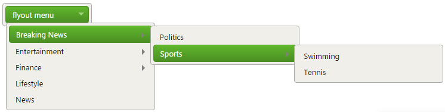
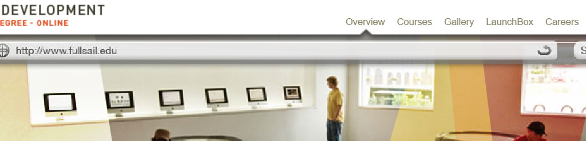

Introduction
Hello everyone, my name is Angel Valdes, I am into software development, game programming, networking, and visual animation; that loves learning about new technologies, sports, video games, and reading. If I can help you with anything ... send me an email. :)
Components Library
Flyout Menu (Featured)
WHAT I HOPE TO PRACTICE/LEARN?
Top navigation flyout down menu with multi-level options. This is a neccessary part in most websites. It is also a very familiar navigation component.
HOW THIS RELATES TO WHAT I HAVE/WILL LEARN IN WDD?
Navigation flyout menus allows to provide the user with a familiar easy to use list of options to navigate and find website sections and topics. Many of this navigations menus can be dinamyc so the options will change based on data and selections.
HOW MIGHT I BUILD THIS?
- Create a nav element with Css to position it and style it
- Create a ul element with Css to style it
- Create li elements for navigation menus
- Create additional ul and li elements for submenus
- Use Css to position submenus, hide and display them appropriately
STYLE GUIDE
Colors: #f0efea, #3c8411,
Fonts: Verdana, Geneva, sans-serif
MAIN CONSTRUCTION IDEA
- Create a normal unordered list with sub list
- Implement Css styling
- You will get something like a first level menu

- Implement additional Css and ol with li to create and position submenus
Image/Video slider
WHAT I HOPE TO PRACTICE/LEARN?
Image and video sliders are a way to make the website become alive. It also provides and easy place to display multiple images with a better use of real state. Many of thise images or videos can have messages and call to action.
HOW THIS RELATES TO WHAT I HAVE/WILL LEARN IN WDD?
We are learning about the web stardards and technologies. Image/video sliders are a very common and standard way to display images and videos in the web. It could change images automatically or allow the user to change them manually. Many of them can have messages, information, and even links to pages. Some times they also have controls to disable volume and pagination.
Tabs

WHAT I HOPE TO PRACTICE/LEARN?
Tabs allow us to display a lot more information than what it would normally feet in the screen at one time, but it will only display if you chose the category or section where that informaiton belongs to. This allows us to manage our screen realstate better and eliminate clutering.
HOW THIS RELATES TO WHAT I HAVE/WILL LEARN IN WDD?
There are many best practices to organize information in the screen, eliminating duplication, confusion, and promoting clarity. Web standards are many time created to offer best practices and solutions to common problems. Tabs are one way to implement those best practices.
Accordions/Panels
WHAT I HOPE TO PRACTICE/LEARN?
Accordions and panels, similar to tabs allows me to better use the screen real state. It is also use to focus the attention of the user to specific information. Accordions would had been a great solution for this page, where each of this controls would be inside one of the accordions panels, and so possibly making this page fit in the screen without having to scroll down.
HOW THIS RELATES TO WHAT I HAVE/WILL LEARN IN WDD?
We have also study about this accordions as well as many more web controls in previous courses. You can find vertical and horizontal accordions.
Always visible panel
WHAT I HOPE TO PRACTICE/LEARN?
Always visible panels are very nice for when you want the user to scroll up and down without losing touch to a specific information. This could be a shopping cart or a totals calculations, or some important information. As the user scrolls, the panel will keep its position in the screen, completly independent from the scrolling action.
HOW THIS RELATES TO WHAT I HAVE/WILL LEARN IN WDD?
...